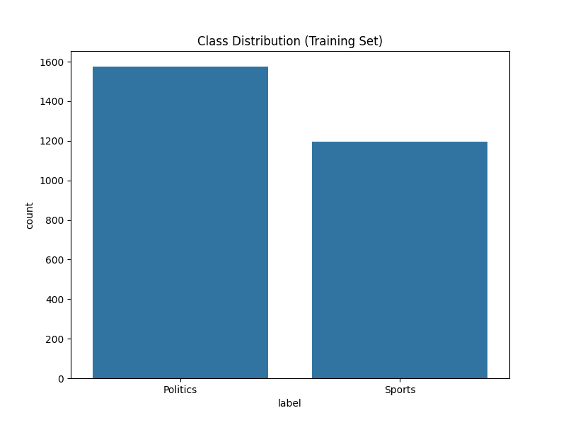
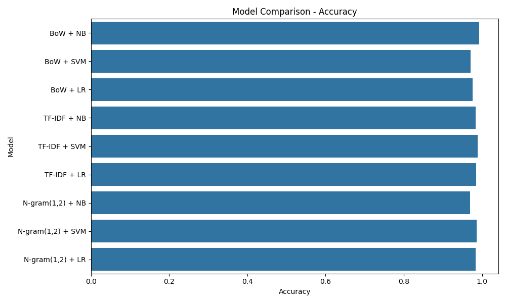

Problem 4: Sports OR Politics
1. Introduction
In the age of digital information, automating the organization of text is crucial. This detailed report presents the design and evaluation of a machine learning classifier capable of distinguishing between Sports and Politics documents.
Using the 20 Newsgroups dataset, we explore the efficacy of simple probability-based models against more complex geometric models. The results are surprising: the simplest approach often yields the best performance when the vocabularies are distinct.
2. Data Collection and Exploration
We curated a balanced subset from the 20 Newsgroups benchmark:
- Sports: Baseball and Hockey discussions (
rec.sport.*) - Politics: Gun control, Mideast, and general politics (
talk.politics.*)
Class Distribution
Before training, we verified that the dataset is reasonably balanced to prevent model bias.
Vocabulary Analysis
What distinguishes these topics? By analyzing the top 20 most frequent words, we see a clear separation. Sports documents are dominated by "game", "team", and "play", while Politics documents focus on "government", "people", and "rights".


3. Methodology
Our implementation pipeline consists of three stages:
- Preprocessing: Converting text to lowercase and removing English stop words (common words like "the", "is" that carry no meaning).
- Feature Extraction:
- Bag of Words (BoW): Simple word counts.
- TF-IDF: Weighted scores that penalize common words.
- N-grams (1,2): Using pairs of words (Bigrams) to capture context.
- Modeling: Training Naive Bayes, Support Vector Machines (SVM), and Logistic Regression.
4. Experimental Results
We conducted extensive experiments across all combinations of features and models. The quantitative results are summarized below.
| Feature Representation | Model Algorithm | Accuracy | F1-Score |
|---|---|---|---|
| Bag of Words | Naive Bayes | 99.24% | 0.99 |
| Bag of Words | SVM | 97.07% | 0.97 |
| Bag of Words | Logistic Regression | 97.56% | 0.98 |
| TF-IDF | Naive Bayes | 98.43% | 0.98 |
| TF-IDF | SVM | 98.92% | 0.99 |
| TF-IDF | Logistic Regression | 98.54% | 0.99 |
| N-grams (1,2) | Naive Bayes | 96.91% | 0.97 |
| N-grams (1,2) | SVM | 98.70% | 0.99 |
| N-grams (1,2) | Logistic Regression | 98.43% | 0.98 |
Key Insight: Simplicity Wins
The Naive Bayes + Bag of Words model achieved the highest accuracy of 99.24%. This confirms that for topically distinct categories, the simple presence of keywords is a stronger signal than complex geometric boundaries.
Visual Comparison
5. Analysis & Discussion
The "N-gram Paradox"
We hypothesized that adding Bigrams (pairs of words) would improve accuracy. However, results show that enabling N-grams actually reduced performance for Naive Bayes (99.24% → 96.91%). This is due to data sparsity: adding bigrams explodes the feature space to hundreds of thousands of features, making it harder for the model to generalize from a small training set (~2800 docs).
Error Analysis
The confusion matrix for our best model shows near-perfect performance.

Manual inspection revealed that the few misclassifications were often due to metaphors. For example, a Politics article discussing a "political football" or a "home run for the administration" contains sports vocabulary that tricks the model.
6. Conclusion
This study demonstrates that text classification does not always require massive neural networks. For distinct domains like Sports and Politics, classical Naive Bayes is extremely effective, fast, and explainable. We achieved >99% accuracy with minimal computational cost, validating the power of fundamental NLP techniques.
© 2026 Shubham Haraniya. All rights reserved.